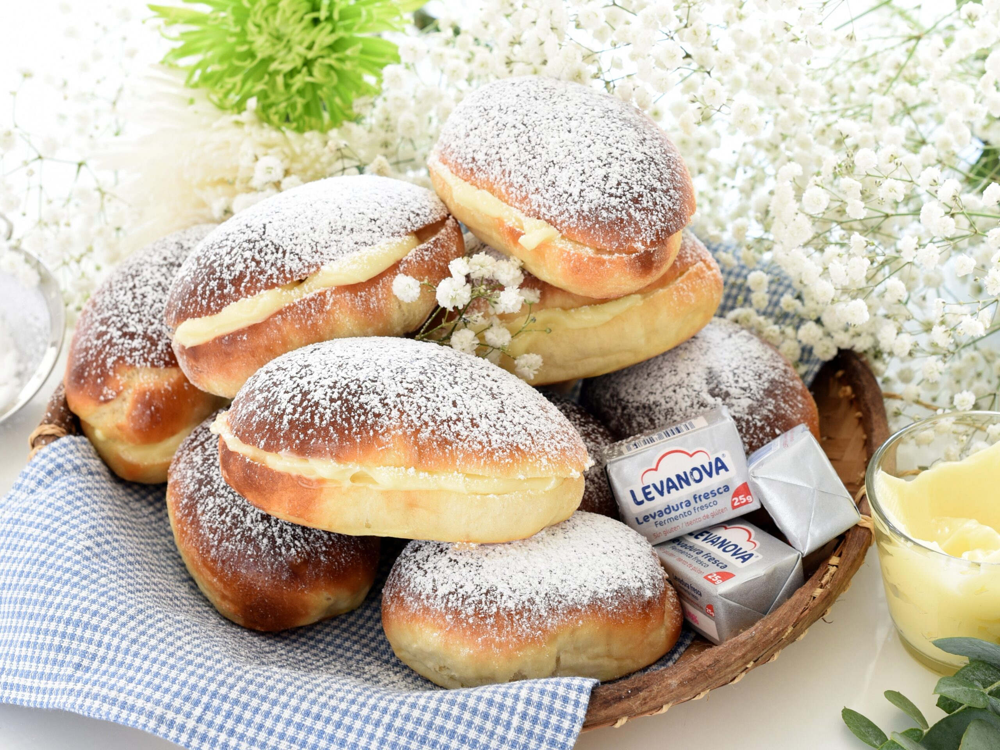
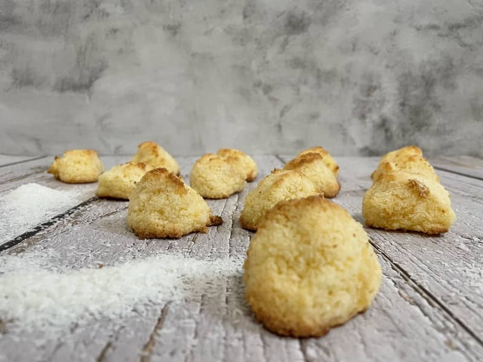

Pastelaria artesanal
Na Migas Amigas, cada bolo é feito com paixão e os melhores ingredientes.
Bolinho Limeño
Um bolinho macio da costa peruana, com um toque de açúcar mascavo e canela, ideal para acompanhar o café.

Tartinha Peruana
Deliciosa tartinha de massa quebrada com creme confeiteiro, acompanhada de um toque de fruta fresca.

Bolinho de Canela
Um bolinho suave e aromático, com um delicado sabor de canela, ideal para o café da manhã ou o lanche.

Bolinho de Manteiga
Macio e esponjoso, com um toque de manteiga que o torna irresistível para qualquer ocasião.
Tartinha Amarela
Uma torta típica peruana com uma camada de creme de leite e um toque de maracujá que a torna única.

Bolinho de Coco
Este bolinho tem um sabor delicado de coco e é perfeito para quem procura algo doce e leve.
Bolinho de Mel
Um bolinho com um toque doce de mel que derrete na boca, perfeito para acompanhar com chá.

Tartinha de Chocolate
Uma deliciosa tartinha com base de chocolate e um recheio suave, perfeita para os amantes de cacau.